Displacement Geometry
Displacement geometry are brush surfaces that have been converted to a triangle mesh of faces that can be freely distorted and sculpted into various shapes. The primary function for displacement surfaces is to create terrain -- hills, valleys, trenches, slopes, etc.
| 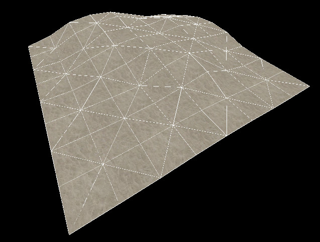 |
| A simple displacement surface. |
Benefits and limitations
Displacement geometry is rendered in batches, and can render very quickly. Per face, displacements render faster than standard brush geometry. After they have been created, displacement surfaces can be altered using the Paint Geometry tools to "sculpt" are variety of different shapes, well beyond what can be created with brushes. Additionally, the alpha channel data for vertices of displacement can be painted in order to blend between two textures on the displacement. This can be used to create transitions between dirt and rock, for example. This vertex data can also be used to determine where detail props and sprites appear on the displacement (i.e. grass sprites on the dirt sections).
Displacement surfaces are limited in some important ways. First off, displacement surfaces are always four-sided, they cannot be created with more or less than four sides. Displacement are also static in the game -- they cannot be moved, animated, or attached to any entity in the engine. Displacements do not seal the map from the void, and displacements on the edge of the map must have a brush that seals the world behind them. Some of the other limitations and characteristics are described below.
Characteristics of Displacement Surfaces:
- Are triangle meshes that can be deformed with paint tools.
- Have three sizes/levels of resolution.
- Are lightmapped and self-shadowing.
- Are generated using a brush face as a base -- the brush is discarded when compiled.
- Multiple displacement surfaces can be added onto one brush.
- Have collisions generated automatically.
- Can only be generated on brush faces with 4 sides (quadrilateral).
- Do not block visibility or seal the map.
- Cannot be tied to or included in any entity.
- Are static -- cannot be moved in-game.
- Are one-sided -- are only visible from one direction (the positive normal direction).
- Do not block shadows if light passes through the non-visible side.
- Can use vertex alpha materials to blend between 2 different textures per displacement.
- The location of detail props on displacements can be tied to the vertex alpha data.
- Can be rotated, scaled, sheared, clipped, and vertex edited similar to brushes.
Construction of Displacement Surfaces
Displacements are created by using one of the faces on a brush solid as a base face. Once the displacement surface has been created, the brush face used a the base face is discarded. Additionally, if a brush solid contains any displacement surfaces, all of the non-displacement sides are discarded when the map is compiled and run in the engine. In other words, once you convert a brush solid to include displacements, the brush solid is non longer a solid object and is removed when you run the map.
The following images illustrate this characteristic:
| 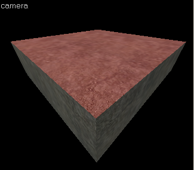 |
| The Base brush face before a displacement is added. |
|
| 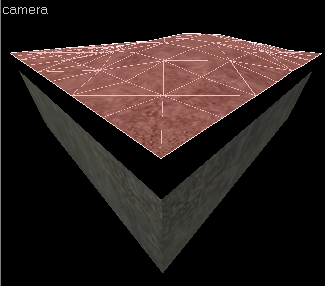 |
| The sides of the brush shown here will not be rendered. |
|
Basic Displacement Creation
How to create and paint a displacement surface:
- Create a brush with the Block Tool that will be used a the base for the created displacement surface.
- Click the Texture Application tool to bring up the Face Edit dialog, and select the Displacement tab.
- In the 3D view, left-click on a brush face to select it. CTRL-click to add or remove faces from the current selection.
- Click Create in the Displacement tab. Enter a value from 2 to 4 for the displacement density and click OK.
| 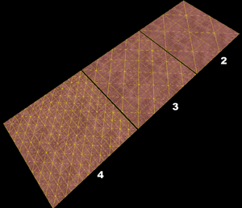 |
| Displacements can be 3 different Scale values. |
- Select the Paint Geometry tool on the Displacement tab. The Paint Geometry panel will open.
- In the 3D View, Left-click on a displacement to raise a section, and right-click to lower it. Use the Radius slider in the Paint Geometry panel to control the size of the painting sphere.
Displacement Options
|
Use the Displacement Mask button on the Map Operations toolbar to toggle the display and selection of the non-displacement sides of brush. |
You can also have more than one displacement surface for each brush. As long as a brush side has 4 edges, you can make a displacement surface out of it:
| 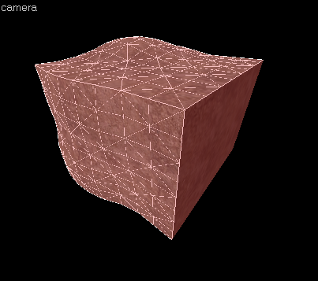 |
| Brushes can have multiple sides with displacements on them. |
See Face Edit, Displacements for a description of all the ways you can paint the geometry on a displacement.
Sewing Displacements
The Sew command on the Displacement tab can be used to connect the edges of two or more selected displacement surfaces. You can sew displacement surfaces in any of the following circumstances:
- Any two displacements whose base face brush surfaces share a common edge with coincident endpoints.
- A displacement surface to a non-displacement brush face, if the base face of the two share a common edge with coincident endpoints.
- A displacement surface to another displacement surface where a shared edge is exactly half the width of the other (called a T-junction).
You can sew displacements with different resolution settings — the vertices of the higher resolution displacement will be moved to match the vertices of the lower resolution displacement.
Examples of circumstances where the Sew command can be used:
| 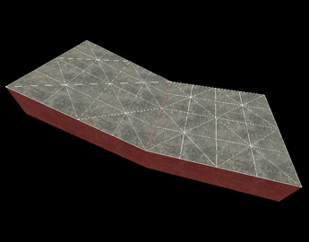 |
| Adjacent displacements with base faces that share an edge. |
|
| 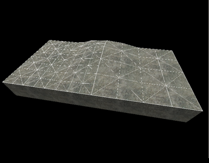 |
| Displacements with different resolutions. |
|
| 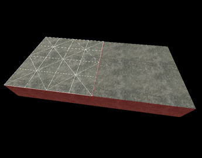 |
| Displacement with a base face that shares an edge with a brush. |
|
| 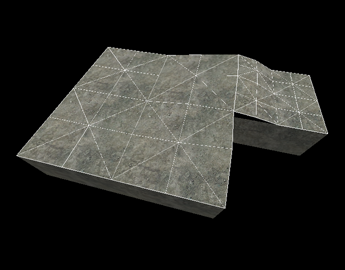 |
| Displacements that share an edge at the exact midpoint. |
|
Surfaces cannot be sewn together if the base faces of the displacements do not share a common edge:
| 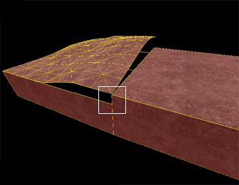 |
| Surfaces that don't share a common edge cannot be connected. |
Other Methods of Altering Displacement Geometry
Besides the displacement painting tools, some the standard brush manipulation tools work on displacement surfaces. It works well to control the contours of the displacement with the paint tools, and do larger manipulations with the following tools.
Transformations
|
Displacements can be freely moved, scaled, rotated and sheared with the Selection Tool, just like standard brushes. The transformation is done to the base brush face, and the displacement follows. |
Clipping
| 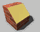 |
The Clip Tool can also be used to clip displacement surfaces. This can be used to trim off unneeded sections of the displacement surface, or to divide a displacement into two pieces without changing its shape. Note: The result of a clip operation must be a four-sided shape to be a valid displacement. |
The following example shows how the Clip Tool can be used to trim a displacement surface:
| 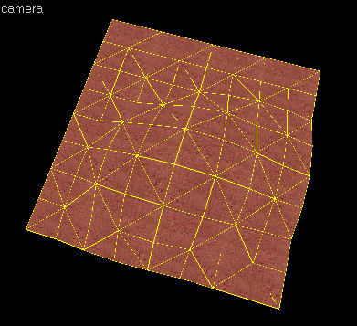 |
| Displacement surface before clipping operation. |
|
| 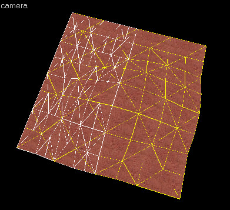 |
| Using the clip tool to draw a clip line in the 2D view previews the result. |
|
| 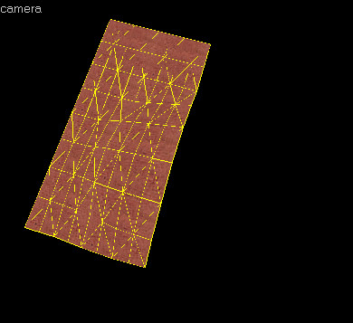 |
| The result of the clip operation. |
|
Vertex Manipulation
| 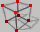 |
The Vertex Tool can also be used to clip displacement surfaces. Vertex editing works well to shift the corners of the displacement to meet important edges, or to raise whole section of terrain without having to paint it by hand. |
There are some important restrictions when vertex editing displacements:
- Vertex editing is done on the base face, not the displacement itself.
- Collapsing or adding vertices is not allowed, and will destroy displacements attached to the base faces.
- The end result of the vertex editing must be a convex (planar) surface. Making a non-planar surface will destroy attached displacements.
The following example shows how the Vertex Tool can be used to raise a section of displacements:
| 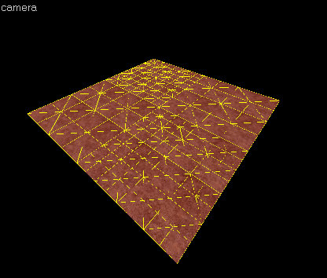 |
| A set of four displacement surfaces, selected to do a vertex editing. |
|
| 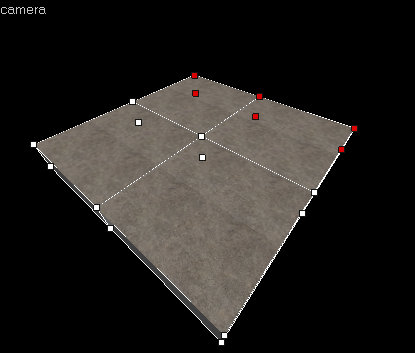 |
| Entering Vertex Edit mode shows the vertices of the base brush faces. |
|
| 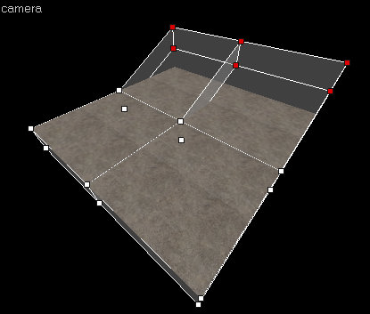 |
| Selecting a set of end vertices and raising them together. |
|
| 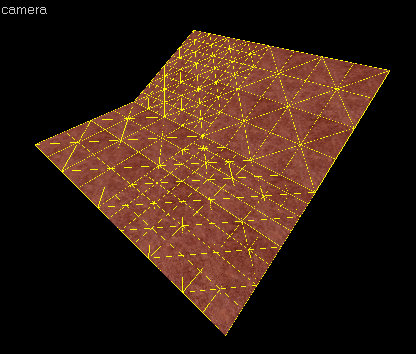 |
| The result of the vertex editing operation. |
|
Creating Holes in Displacements
Sometimes you need to create a hold or gap in displacement surfaces for various reasons. See Creating Holes in Displacements for information on how to create holes in displacement geometry.
Blended Displacement Materials (Alpha Channel Painting)
The Paint Alpha tools allow you to blend between two different textures on a displacement surface by painting the alpha channel. The alpha channel contains data about the transparency of the two textures assigned to the surface. This can be used to create transitions in the texturing, like grass to dirt, sand to rock, etc. To do alpha channel material blending, special blend materials are made specifically for this purpose that contain the necessary shader. Only these materials can be used for blending. If one of the standard (non-blended) materials are used, the Paint Alpha tools will have no visible effect.
To add a blended material to a displacement surface and paint the alpha channel data to blend the textures:
- Choose the Texture Application Tool to open the Face Edit dialog box.
- Click in the 3D View to select a displacement face you wish to add a blend material to.
- Click the Browse button on the Material tab of the Face Edit dialog box.
- When the Texture Browser appears, type "blend" into the filter field at the bottom of the Texture Browser.
- Double-left-click to select one of the blended materials and close the Texture Browser.
- Click the Apply button on the Face Edit dialog to apply the material to the displacement surface.
- Click the Displacement tab on the Face Edit dialog.
- Click the Paint Alpha button on the Displacement tab to open the Paint Alpha tools.
- Type 100 into the Value slider field. Make sure that Raise/Lower is selected under Effect.
Note: Lower numbers in the Value field paint the alpha channel data at a slower pace, higher numbers paint the data faster.
- Left-click on one of the vertices of the displacement in the 3D View to add alpha channel data. Right-click on the displacement to remove data.
| 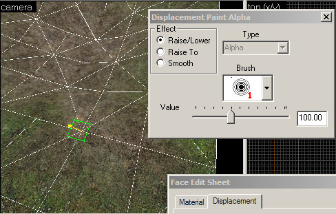 |
| The green box is the center of the Paint Alpha paint brush. |
© 2004 Valve Corporation. All rights reserved. Valve, the Valve logo, Half-Life, the Half-Life logo, the Lambda logo, Steam, the Steam logo, Team Fortress, the Team Fortress logo, Opposing Force, Day of Defeat, the Day of Defeat logo, Counter-Strike, the Counter-Strike logo, Source, the Source logo, Hammer and Counter-Strike: Condition Zero are trademarks and/or registered trademarks of Valve Corporation. Microsoft and Visual Studio are trademarks and/or registered trademarks of Microsoft Corporation. All other trademarks are property of their respective owners.